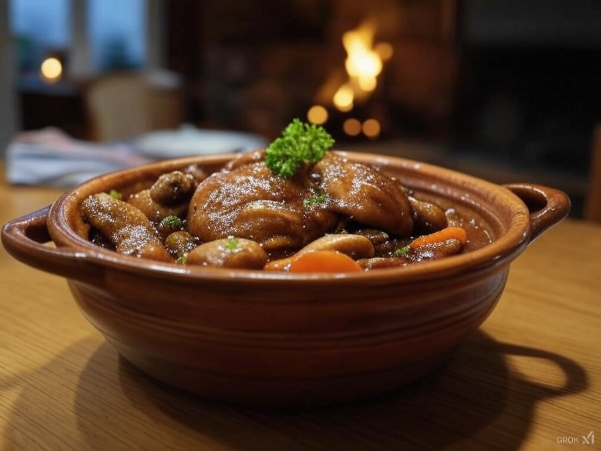

Le coq au vin est un grand classique de la cuisine française, un plat traditionnel qui allie générosité et saveurs authentiques. Originaire de Bourgogne, cette recette est un véritable hymne à la gastronomie française.
Ingrédients (pour 6 personnes)
1 coq ou 1 poulet fermier
250 g de lardons
250 g de champignons de Paris
2 oignons
3 gousses d'ail
1 bouteille de vin rouge de Bourgogne
25 cl de bouillon de volaille
2 cuillères à soupe de farine
Thym, laurier
Huile d'olive
Sel et poivre

Préparation
Découpez le coq en morceaux et faites-le mariner dans le vin rouge toute une nuit.
Le lendemain, égouttez les morceaux de viande et gardez le vin de marinade.
Faites revenir les lardons dans une cocotte jusqu'à ce qu'ils soient dorés.
Ajoutez les morceaux de coq et faites-les dorer de tous les côtés.
Incorporez les oignons émincés et l'ail écrasé.
Saupoudrez de farine et mélangez.
Versez le vin de marinade et le bouillon de volaille.
Ajoutez le thym et le laurier.
Laissez mijoter à couvert pendant environ 1h30.
En fin de cuisson, ajoutez les champignons.
Servez chaud avec des pommes de terre ou des pâtes.
Le petit plus
Pour une saveur plus riche, utilisez un vin rouge de Bourgogne comme un Côtes du Rhône ou un Beaujolais. La qualité du vin influencera directement le goût du plat.
Un plat traditionnel français qui ravira vos convives avec ses saveurs riches et son authenticité !